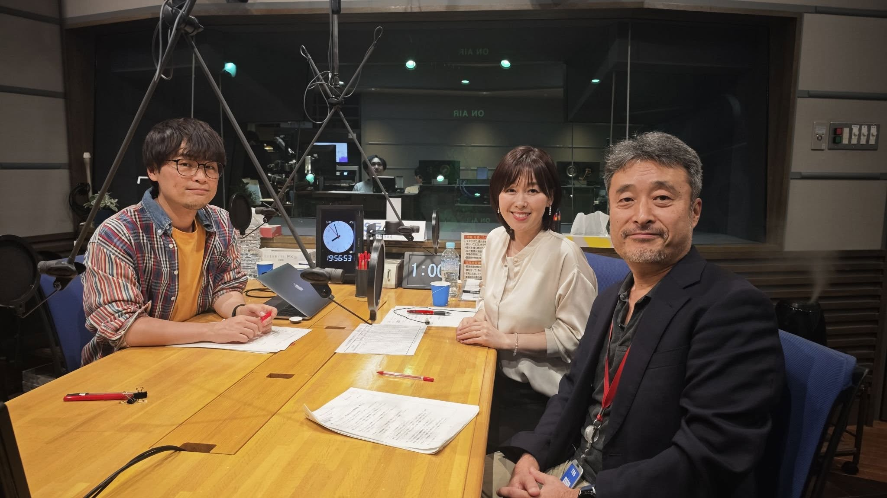
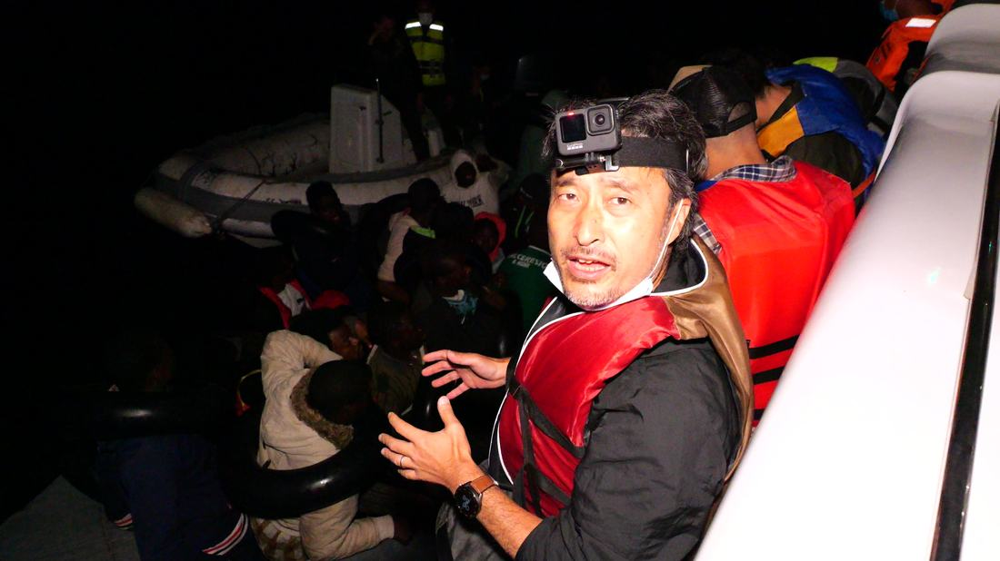
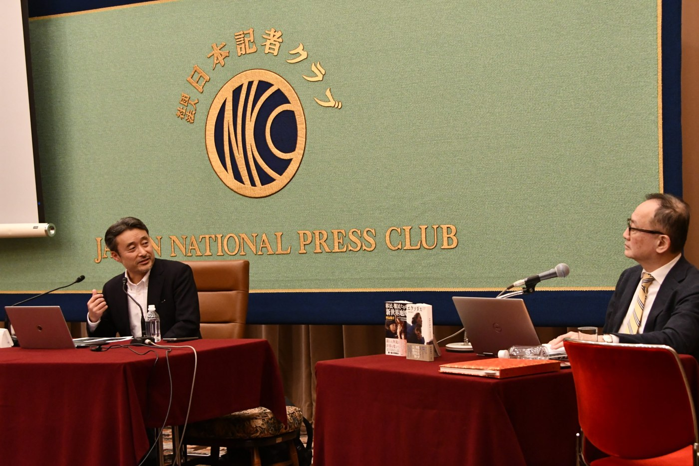
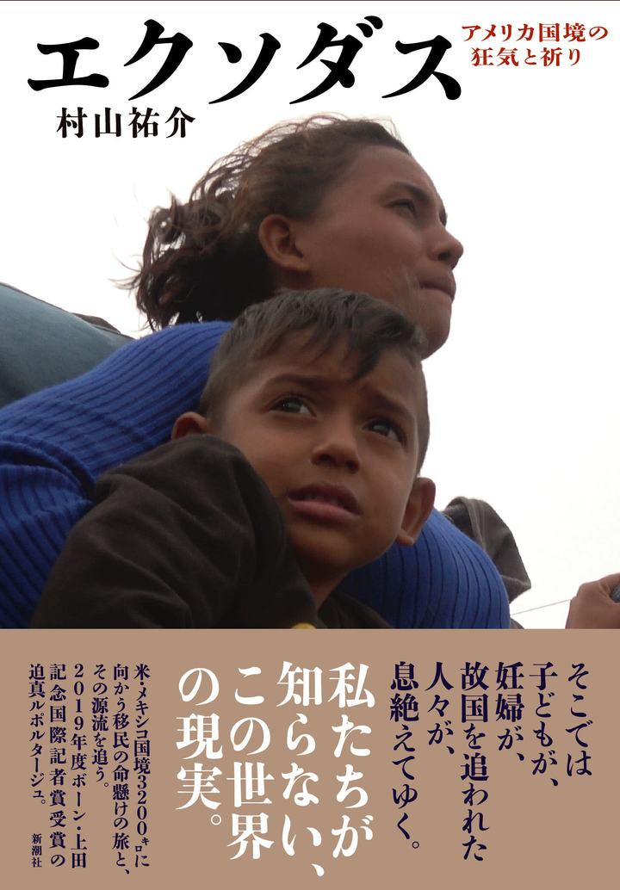
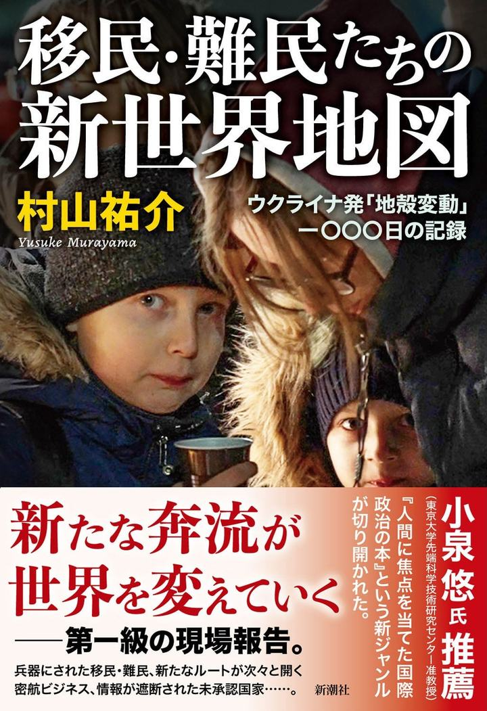
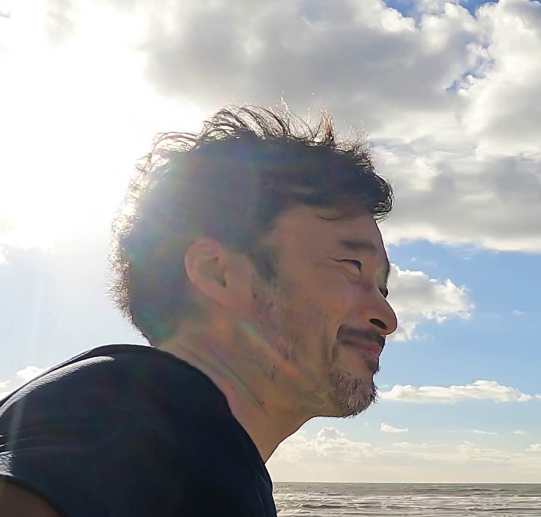

メディア出演

TBSラジオ「荻上チキ・Session」でシリア情勢を報告
朝日新聞 withPlanet／TBSラジオ「荻上チキ・Session」／テレビ朝日「報道ステーション」／AbemaTV／MBSなど（詳細はこちら）↗

村山祐介
YUSUKE MURAYAMA, JOURNALIST
REPORTING
WORKS

朝日新聞 withPlanet／TBSラジオ「荻上チキ・Session」／テレビ朝日「報道ステーション」／AbemaTV／MBSなど（詳細はこちら）↗

早稲田大学／国際基督教大学（ICU）／立教大学／桜美林大学／日本記者クラブ／国際文化会館／国際協力機構（JICA）など（詳細はこちら）↗
テーマや企画段階から、お気軽にご相談ください。
お問い合わせ ↗BOOKS & AWARDS


戦時下のウクライナに半年、周辺国に半年。侵攻に伴う「地殻変動」の現場を約3万キロたどり、約600人と向き合ったルポ。
本にまつわる活動 ↗PROFILE

1971年、東京都生まれ。立教大学法学部卒。1995年に三菱商事に入社し、開発事業などに携わる。2001年に朝日新聞社へ。ワシントン特派員として米政権の外交・安全保障、ドバイ支局長として中東情勢を取材し、国内では政権や経済を担当。GLOBE編集部員、東京本社経済部次長（国際経済担当デスク）などを経て、2020年に独立した。
国境を越えるヒト・モノ・カネ・情報の動きを追う「クロスボーダー」をテーマに、移民・難民、戦争・紛争、資源・貿易・開発などを取材。現場で出会う人びとの暮らしと、その背景にある政治・経済を、文章と映像で伝えている。
独立後はオランダ・ハーグ、アラブ首長国連邦・ドバイを経て、現在はマレーシア・セランゴールを拠点に活動。
SUPPORT